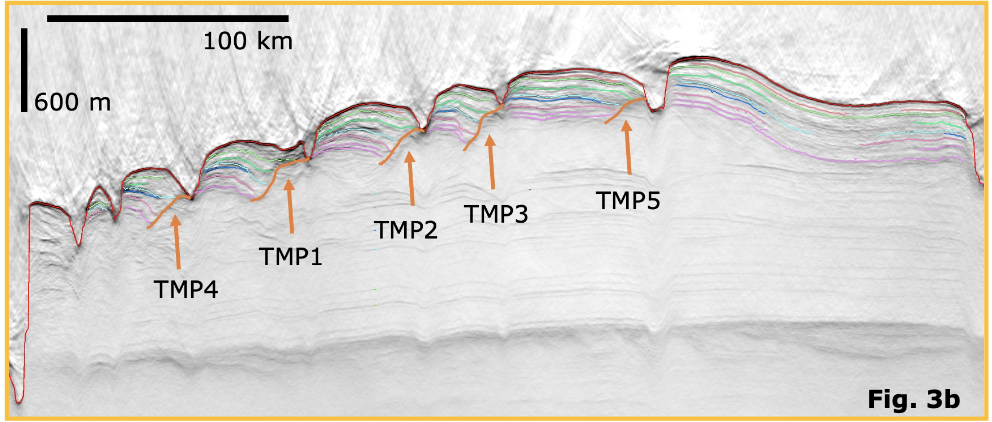
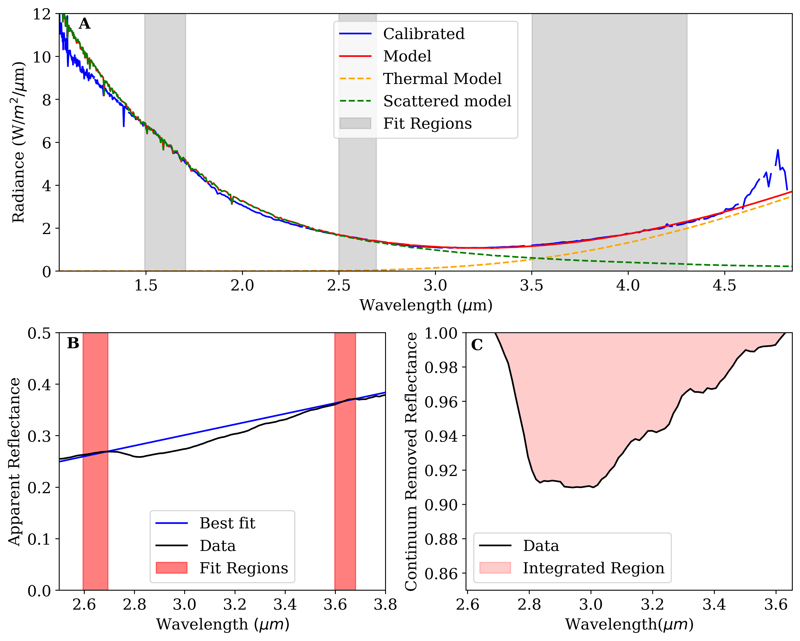
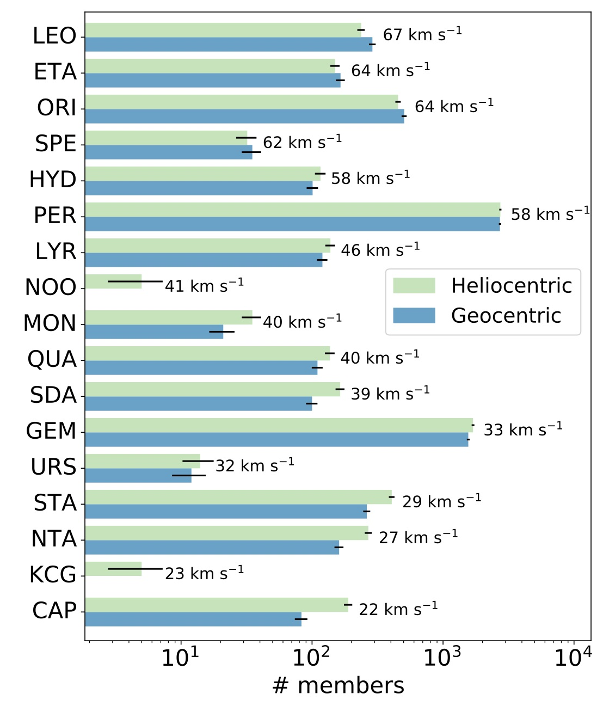

Current Projects
Mapping Migration Paths of Mars Northern Polar Spiral Troughs
with Dr. Ali Bramson, Purdue University

Mars’ northern pole features a kilometers-thick ice cap of mostly pure water ice, and most of this polar cap is made up of the North Polar Layered
Deposits (NPLD). The NPLD is a series of continous layers of ice and dust. The variation in dust content allows for observation of these layers through ground penetrating radar, like SHARAD aboard MRO.
These layers provide a record of variations in Mars’ climate due to orbital forcing.
In the upper ~500 meters of the NPLD are sloping unconformities, which have been interpreted as bounding surfaces due to the migration of the spiral troughs poleward over time.
Mapping of the Trough Migration Paths (TMPs) will allow for exploration of variations in shape of the paths and act as a tracer for Mars’ volatile mass balance.
Shown on the left is an example of a migration path mapped in the 3D dataset.
Current Projects
Mapping Migration Paths of Mars Northern Polar Spiral Troughs
with Dr. Ali Bramson, Purdue University
Mars’ northern pole features a kilometers-thick ice cap of mostly pure water ice, and most of this polar cap is made up of the North Polar Layered
Deposits (NPLD). The NPLD is a series of continous layers of ice and dust. The variation in dust content allows for observation of these layers through ground penetrating radar, like SHARAD aboard MRO.
These layers provide a record of variations in Mars’ climate due to orbital forcing.
In the upper ~500 meters of the NPLD are sloping unconformities, which have been interpreted as bounding surfaces due to the migration of the spiral troughs poleward over time.
Mapping of the Trough Migration Paths (TMPs) will allow for exploration of variations in shape of the paths and act as a tracer for Mars’ volatile mass balance.
Shown on the left is an example of a migration path mapped in the 3D dataset.
Exploring the variability of the 3 micron hydration feature across the southern hemisphere of the Moon
With Dr. Jessica Sunshine and Dr. Lori Feaga, University of Maryland, College Park

The 3µm OH/H2O hydration feature on the Moon has been observed using various instruments. The 2009 Deep Impact spacecraft flyby present a unique view of the southern hemisphere, allowing for exploration of the feature spatially and temporally using near infrared spectroscopy. The HRI-IR spectrometer aboard Deep Impact includes out to 4.85 micrometers, which allowed for removal of the thermal component of the spectra through modeling of a scatter and thermal spectra component. This allows us to investigate the entire 3 micron absorption feature and the variability in strength and shape across the southern hemisphere.
As there were three fly-by observations, we also have a small region of repeat coverage spanning half of a lunar day. This allows for investigation into diurnal variation of the same physical region.
Past Projects
Survey of low speed meteor showers
with Dr. Althea Moorhead, Marshall Space Flight Center, Meteoroid Enviornment Office

Proper shower assossiation of meteors observed expands our ability to predict and forecast future shower fluxes. Slow meteors often are difficult to associate with showers due to their geometry upon collision with Earth's atmosphere, so we attempted to associate meteors to showers from their helocentric radiant, rather than the geocentric radiant they are observed in.
We found that the use of heliocentric radiant associates more medium to slow speed meteors to known showers than the geocentric radiant. Using a density based spatial clustering algorithm with noise (DBSCAN), we organized metoers into showers given speed, direction (radiant), and time of occurance.
Shown to the left is a bar chart containing the number of members associated to each shower given our two approachs, heliocentric and geocentric. Note that the x-axis is logarithmic.